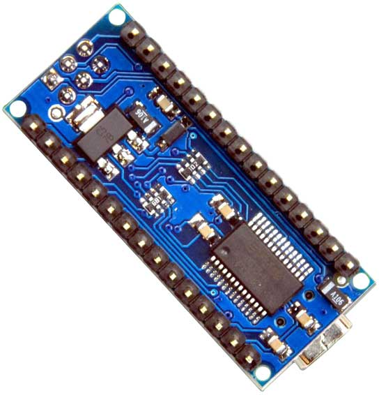
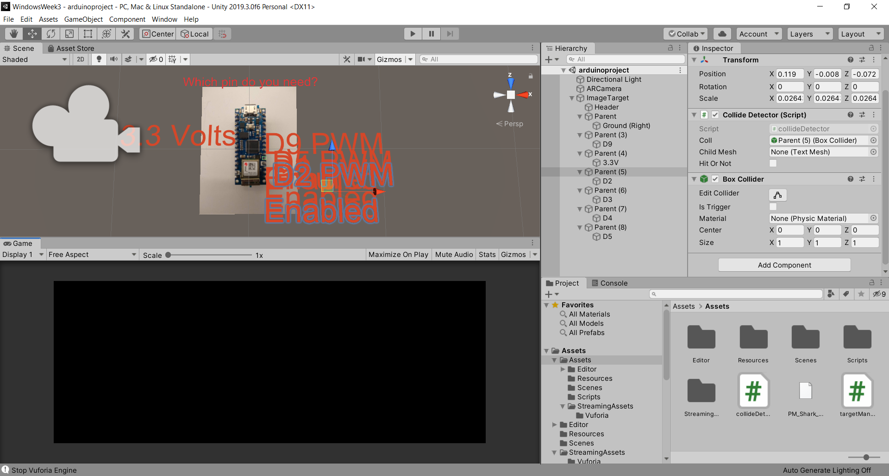
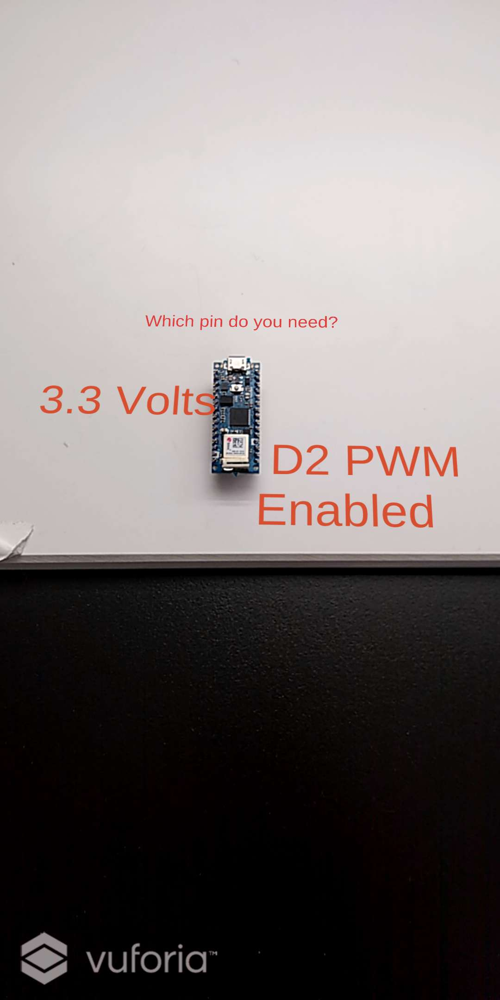

This week's theme is "image augmentation" -- using the power of mixed reality to help improve our interactions with the objects we use. There was a distinction drawn in the last class that I found really interesting and wanted to investigate further, that the digital and physical worlds excel at separate things. The digital world is very good at coding, breaking down complex things, getting into bits and bytes and the nitty gritty. The physical world is where we live, and it's home to intuitive, big human gestures like touch and verbal language and the personality we associate with those things. The notion that AR is best served when the digital does what the digital is good at and the physical does what the physical is good at was appealing to me, and something I wanted to explore more.
I was thinking about how the digital could help me interact with some of the objects I use in my day to day life when I remembered a common frustration: I am ALWAYS forgetting which pins are which on my Arduino Nano because they aren't labeled, and I'm always double checking them. This kind of information display, I thought, is a perfect thing for the digital world to tackle.
My idea was that you'd be able to touch the screen your Arduino was displayed on and instantly pull up pin information. Getting the image tracker and the text in Unity was the easy part -- I just built a cube, deleted the mesh, put on a text mesh instead, and made the actual cube into a tiny little thing that fit over each pin.
Getting touch working was... not as easy. This was the most in-depth I've ever gone into scripting in 3D Unity, and basically everything I had to do for this is something I learned this week. What is raycasting? Now I know! GetChild, GetTouch, SetActive are all now wonderful new parts of my Unity vocabulary. There were two main issues I had to debug:
1. SetActive(). This was a pain. SetActive(false) basically removes an element from the hierarchy, as if it never existed. I wanted the pin info for my Arduino to disappear and reappear whenever tapped, so I thought SetActive would be perfect. The problem is that the text would disappear when tapped and never turn back on. In retrospect, the reason is obvious: when SetActive is turned to false it removes the whole game object, so you can't ever turn it back on. The solution was to attach the collider to a parent object and then attach the rest of the stuff to the child object. All the mesh and such on the child object would turn off when tapped, but the parent object would stay on.
2. Raycasting. This confused me so much, and I know I'll have to review it a bit more to actually get it down. The problem I encountered was that my raycasting was firing once for the first hit, but never fired again after that. The problem, as I eventually realized, was in the example code. The raycast was being set to a new position every time it cast. I fixed that and it worked, and the touch worked, and it all worked fine!
 The UI definitely needs some work. The text is currently too big, and it's hard to tell which pin is associated with which text. It'd look a bit better if the text were smaller and cast a line to a specific pin, which is actually completely doable and something I'll look into.
Additionally, I'm imagining a function where people can sort by what they're looking for -- PWM pins, digital pins, analog, etc.
Comments? Questions? Concerns? Email me here!